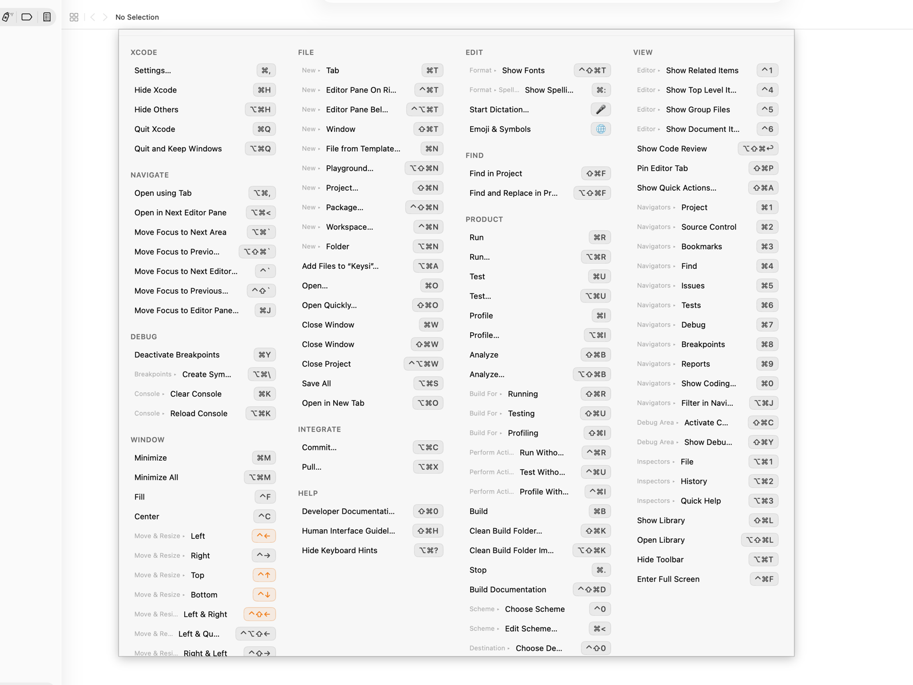

macOS ya te da tres formas de hacerlo, y vale la pena conocerlas antes de instalar nada. Dos de ellas están a un clic dentro de la app en la que ya estás. Cada una se queda corta en un punto concreto, y de eso va esta página. Luego va de Keysi, que es la herramienta que vende este sitio: muestra de golpe la lista entera de atajos de la app que tienes delante, y esa parte es gratis, sin límite de tiempo.
Entre las tres, el hueco tiene siempre la misma forma: no hay manera de ver de golpe todos los atajos de una app, en el momento en que la estás usando, sin salir de ella.
Mantén pulsada ⌘ un momento y Keysi muestra todos los atajos de la app que tengas delante, agrupados por el menú del que vienen, con una ruta para lo que esté dentro de un submenú y cada combinación dibujada como una tecla real (⌘⇧S) en lugar del texto «Cmd+Mayús+S». Suelta y desaparece. Si prefieres otra tecla, el modificador es configurable: ⌘, ⌥, ⌃ o ⇧.
No es una lista de atajos guardada para cada app. Keysi lee la estructura de menús viva de la app a través de la API de Accesibilidad de macOS en el momento en que se lo pides, y por eso funciona en apps para las que nadie escribió una chuleta, y por eso un comando que la app tiene desactivado en ese momento aparece atenuado en vez de engañarte.
Esa misma lectura es la que generó las listas de atajos de Xcode, Keynote, Finder, Mail y otras apps de Mac de este sitio, por si quieres consultar una antes de instalar nada.

Y como es el menú vivo y no una foto de él, pulsar una fila ejecuta ese comando. Lo cual importa más de lo que parece para el caso en el que probablemente estés: buscaste el atajo porque querías que se hiciera la cosa. Púlsalo ahora, lee las teclas de pasada y apréndetelo a la tercera o la cuarta en vez de a la primera.
La lista en sí es gratis, sin límite de tiempo. Mantén pulsado tu modificador, ve todos los atajos y haz clic en uno para ejecutarlo.
Este es el fallo del que la barra de menús no puede avisarte. macOS reclama algunas combinaciones para sí, y un atajo del sistema gana antes de que la pulsación llegue siquiera a la app, pero el menú de la app imprime su atajo igualmente, así que la única señal que recibes es que no ha pasado nada. Keysi lee las asignaciones de atajos del propio sistema y marca las filas que este va a interceptar, así te enteras mientras miras la lista y no pulsando teclas ante una app que no puede oírlas.
Leer la barra de menús solo funciona cuando los atajos están en la barra de menús. Muchos no lo están. Figma y Slack guardan la mayoría en otro sitio, y un programa de terminal como Vim o tmux no tiene ninguna barra de menús de Mac donde ponerlos. Para esos, Keysi usa hojas de referencia personalizadas: listas escritas a mano que se asocian a una app por su identidad. Figma, Slack, Vim y tmux vienen incluidas, y hay un editor para escribir las tuyas para cualquier app, sin tocar JSON a mano si no quieres.
Las hojas de Vim y tmux funcionan porque Keysi mira dentro de tu terminal y no solo a él: en un emulador de terminal conocido (Terminal, iTerm2, Ghostty, Warp, Alacritty, WezTerm, kitty, Hyper, Tabby) detecta qué programa se está ejecutando realmente en primer plano y busca hojas para ese. Con varias pestañas o divisiones abiertas deduce cuál estás mirando por el propio título de la ventana del terminal, y cuando eso no es concluyente recurre a mostrar las hojas de todo lo que se esté ejecutando: acierta la mayoría de las veces, sin garantías.
Vale la pena decirlo claro, porque es la parte que una chuleta no arregla: puedes buscar un atajo cien veces y seguir yendo al menú en la ciento uno. Una referencia espera a que la consultes.
Eso es lo que añade Keysi Pro ($19.99, un solo pago, tres Macs). Shortcut Coach se da cuenta cuando eliges con el ratón un comando de menú que ya tiene atajo de teclado, y te ofrece un recordatorio discreto que puedes descartar; el modo práctica entrena los que se te siguen escapando; y Keysi cronometra lo que tardan de verdad tus propios viajes al menú, así que las cifras que te enseña son una cuenta sobre dos cosas que ha contado, no una media del sector. Pro también hace que Keysi sea accesible desde fuera de sí misma: Raycast, Atajos, Spotlight, Siri y el menú Servicios.
Todo lo que hay en esta página por encima de esa sección es gratis, sin límite de tiempo, sin cuenta y sin tarjeta: el panel, el panel con búsqueda, pulsar para ejecutar, las hojas personalizadas y su editor, y los avisos de interceptación. Cada instalación empieza además con 14 días de Pro, y cuando se acaban Keysi vuelve a la versión gratuita en lugar de pararse.
No puedes escribir para buscar mientras mantienes pulsado el modificador. Un monitor global de eventos puede observar las pulsaciones, pero no consumirlas, así que lo que escribieras acabaría igualmente en la app de debajo, y Keysi no va a instalar el tipo de captura de entrada que podría cambiarlo. Pulsa el atajo global en su lugar (⇧⌘K por omisión) y se abre el mismo contenido como un panel de verdad, donde la búsqueda, las flechas y Escape funcionan. Es un intercambio deliberado, no un descuido.
macOS 14 o posterior, y el permiso de Accesibilidad. Esa es la API que lee la estructura de menús de otra app, y no hay forma de hacer esto sin ella. Keysi se distribuye directamente y no por la Mac App Store, porque el sandbox que exige la App Store bloquea esa API por completo; está firmada con un certificado de Developer ID y notarizada por Apple. Las preguntas frecuentes explican exactamente qué permite el permiso y qué no, y la página de privacidad lista todas las conexiones de red que hace la app.